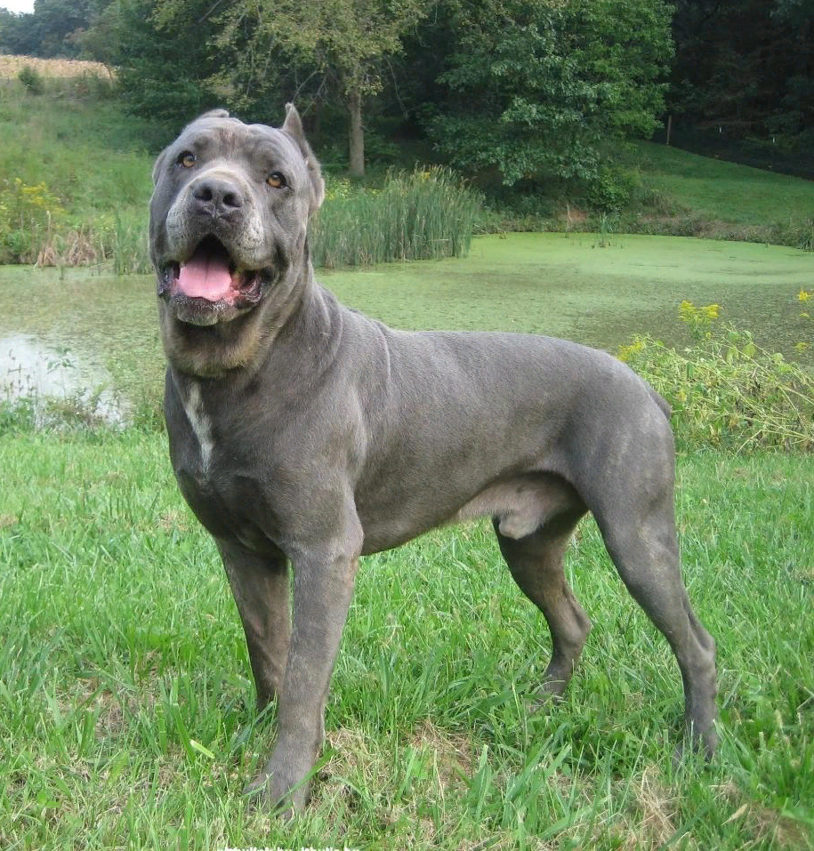

Кане-корсо
Оценка породы:
Ум
Линька
Популярность
Охранные качества
Игровая активность
Сторожевые качества
Дружелюбность к детям
Склонность к дрессировке
Характеристика породы
Краткое описание
Условия содержания:
Дом без сада, дом с садом, квартира
Длина шерсти:
Короткая
Размер взрослой собаки:
Рост самок – 60-64 см, самцов 64-68 см,
вес самцов примерно 45-50 кг, самок – 40-45 кг
вес самцов примерно 45-50 кг, самок – 40-45 кг
Средняя продолжительность жизни:
10-12 лет
Выгул:
Обязательный выгул по 2 раза в день
Потребность в физической нагрузке:
Высокие потребности в физической нагрузке (регулярные или ежедневные тренировки более 3 часов в день)
Стоимость щенка:
От 15000 до 50000 рублей
Фото взрослой собаки

Стоимость щенков
Без родословной – 12000-15000 рублей.
Пет-класс – 20000-25000 рублей.
Брид-класс – 30000-40000 рублей.
Шоу-класс – 50000 рублей.
Особенности характера и поведения
Кане-корсо – настоящие итальянцы. Им не присущ строгий аристократизм, эти собаки игривы, веселы и активны. Они преданы, уравновешены и сдержаны. Многие считают, что они в какой-то степени флегматики.
Эти собаки абсолютно не агрессивны, но остаются хорошими сторожами и защитниками территории.
Корсо действительно имеют внушительный внешний вид, могут даже повергнуть в страх прохожих и незнакомцев. Но эти питомцы ощущают свою силу и не смогут навредить даже ненамеренно. Большинство владельцев не имеют претензий к породе, но везде есть подводные камни.
Достоинства
Качества охранников у Корсо в крови.
Их не нужно специально дрессировать.
Эти собаки имеют сильный территориальный инстинкт и будут защищать все, что ему вверят хозяева.
Они четко разграничивают опасных и безопасных людей и животных, не склонны проявлять агрессию и нападать первыми.
Кроме этого голос они подадут только в самый нужный момент, а в экстренном случае способны думать и решать самостоятельно.
Бесконечно преданы семье.
Все Кане-корсо однолюбы, не станут ластиться или играть с чужими людьми.
Дети для этих собак не просто друзья.
Эти питомцы будут оберегать их от любой опасности, вытерпят все издевательства, никогда не обидят даже ненамеренно.
Корсо прекрасно ощущают свои размеры, поэтому достаточно аккуратны во время игр.
К посторонним малышам относятся не хуже.
Достаточно флегматичны, не часто проявляют эмоции, но обладают яркой мимикой.
К животным равнодушны, могут ужиться и с кошкой, и с попугаем.
Умны и послушны, легко дрессируются.
Не стремятся занять лидирующую позицию в доме, не станут манипулировать хозяевами.
Корсо ненавязчивы, они с радостью поиграют с домочадцами, но не станут надоедать и мешаться под ногами.
Недостатки
Недостатков темперамента у собак породы Кане-корсо практически не имеется.
Но каждому свое.
Определенно такой питомец не подойдет тем хозяевам, которые малоактивны
или не имеют времени и материальных возможностей для его содержания.
Кроме этого необходимо учесть особенности физиологии, например сильное слюноотделение и храп.
Корсо могут быть упрямыми, девочки нередко капризничают или привередничают в выборе еды.
При неграмотном воспитании и отсутствии социализации собака может становиться агрессивной к незнакомцам.
Без должных физических нагрузок станет слишком активной дома.
Эти питомцы любят все пробовать «на зуб» особенно в щенячьем возрасте.
Станет настоящим кошмаром для того, кто вторгнется на территорию.
Корсо терпеть не могут чужаков, которые без разрешения пересекают границы ворот участка или порога квартиры.
Церемониться не будут.
Действительно, редко можно найти негативные отзывы об этой породе.
Чаще всего отрицательные эмоции собака приносит,
не оправдав ожидания хозяев (если они хотели диванную декоративную собаку) или из-за обильного слюнотечения.
Владельцы указывают, что порода замечательная,
но без правильной социализации будет настороженно относиться ко всему, что двигается;
также жалуется на слюни.
Уход и содержание
Кане-корсо не особо крупная собака, поэтому может спокойно ужиться в квартире.
Для уличного содержания подходит только при очень теплом климате, из-за короткой шерсти плохо переносит морозы.
Собака практически не пахнет, но активно линяет в межсезонье.
Уход, как и за всеми мастифами, включает регулярные выгулы, гигиенические процедуры и правильное сбалансированное питание.
Перед приобретением щенка нужно позаботиться об оборудовании для него спального места. Также необходимо купить миски на подставках, игрушки, средства гигиены.
Питание
Кане-корсо могут быть неприхотливыми в выборе питания, а могут и капризничать.
Это зависит от личных качеств каждой особи.
Порода склонна к аллергиям на некоторые продукты, поэтому стоит серьезно подойти к разработке персонального рациона.
Кане-корсо едят много, около 800 грамм еды в день.
Щенков кормят 3-4 раза в сутки, а взрослых особей – 2 раза.
Стоит выбирать только среди продуктов супер-премиум класса холистик (беззерновые).
Здоровье
Корсо самобытные собаки, они развивались практически без вмешательства человека.
Но из-за различных многочисленных породных линий приобрели определенные заболевания, свойственные практически всем особям.
Заводчики жалуются на болезненность псов и кратковременность жизни, хоть по стандарту
Кане-корсо могут доживать до 12 лет.
За этими собаками нужно тщательно следить, особенно за их физическими нагрузками и питанием.
При правильном уходе и своевременном обращении в ветеринарную клинику
при возникновении симптомов любого заболевания, риск потерять питомца минимален.
Особо важную роль играет регулярная вакцинация щенков и взрослых особей.
Эта порода склонна к различным заболеваниям опорно-двигательной системы.
Самое страшное из них – дисплазия тазобедренного сустава, оно передается по наследству и практически неизлечимо.
Можно продлевать и улучшать качество жизни питомца с помощью медикаментов, некоторые прибегают к решению проблемы хирургическим путем.
Так или иначе, болезни можно избежать, если не перегружать задние лапы собаки.
Часто встречаются проблемы с глазами – заворот века, вишневый глаз, конъюнктивиты.
Могут случаться заболевания пищеварительной системы, аллергические реакции и нарушения в работе щитовидной железы.
Выгул
Выгул Кане-корсо должен быть активным, но не очень длительным, особенно для щенков.
Маленькие собаки особенно восприимчивы к нарушениям костных и хрящевых тканей.
В 3-4 месяца питомцев нужно выгуливать 3-4 раза в день по 30 минут.
С 4-х месяцев нужно приучать Корсе к двухразовому активному выгулу по 1 часу.
Хорошей тренировкой станет пробежка или плавание.
Не стоит задерживаться на улице, если температурная планка опустилась ниже -5°С или льет дождь.
Плохие погодные условия негативно повлияют на здоровье собаки.
После второй вакцинации нужно приучать щенка к людным местам,
чтобы он мог понять, что не все незнакомцы и животные опасны.
Уход за шерстью
У Кане-корсо короткая шерсть, не требующая особого ухода.
Эти собаки активно линяют весной и осенью, в этот период важно протирать их щеткой-перчаткой ежедневно.
В остальное время хватит 2-х разового вычесывания мягкой щеткой.
Купание требуется по мере загрязнения, обычно, не чаще 2-х раз в год с помощью специальных косметических средств.
Можно использовать сухой шампунь или ополаскивать питомца со шланги.
После приема «ванн» в водоемах собаку необходимо обязательно обмыть проточной водой.
Уши Кане-корсо купируют, как и хвост. Чаще всего этим занимаются питомники.
Слизистые и уши необходимо осматривать на наличие выделений и мусора,
протирать влажными ватными тампонами 2-3 раза в неделю. Зубы чистят 1 раз в неделю.
Слюни необходимо вытирать после каждого приема пищи.
В летнее время надо обрабатывать шерсть препаратами от блох и клещей.
Кроме этого важно не забывать проводить своевременную дегельминтизацию.
Видео о породе